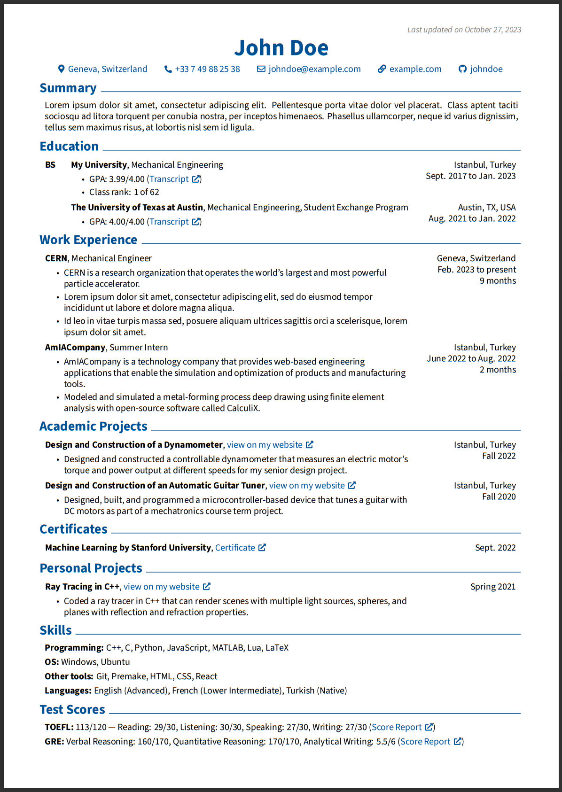

RenderCV¶


)
)
RenderCV is a Python application that creates a $\LaTeX$ CV as a PDF from a JSON/YAML input file. Currently, it only supports one theme (classic). An example PDF can be seen here. More themes are planned to be supported in the future.
What does it do?
- It parses a YAML (or JSON) file that looks like this:
cv: name: John Doe label: Mechanical Engineer location: Geneva, Switzerland email: johndoe@example.com phone: "+33749882538" website: https://example.com social_networks: - network: GitHub username: johndoe - network: LinkedIn username: johndoe education: - institution: My University url: https://example.com area: Mechanical Engineering study_type: BS location: Geneva, Switzerland start_date: "2017-09-01" end_date: "2023-01-01" transcript_url: https://example.com gpa: 3.10/4.00 highlights: - "Class rank: 10 of 62" - institution: The University of Texas at Austin url: https://utexas.edu area: Mechanical Engineering, Student Exchange Program location: Austin, TX, USA start_date: "2021-08-01" end_date: "2022-01-15" work_experience: - company: AmIACompany position: Summer Intern location: Istanbul, Turkey url: https://example.com start_date: "2022-06-15" end_date: "2022-08-01" highlights: - AmIACompany is a **technology** (markdown is supported) company that provides web-based engineering applications that enable the simulation and optimization of products and manufacturing tools. - Modeled and simulated a metal-forming process deep drawing using finite element analysis with open-source software called CalculiX. - Then, it validates the input, such as checking if the dates are consistent, checking if the URLs are correct, etc.
- Then, it creates a $\LaTeX$ file.
- Finally, it renders the $\LaTeX$ file to generate the PDF, and you don't need $\LaTeX$ installed on your PC because RenderCV comes with TinyTeX.

Quick Start Guide¶
- Install Python (3.10 or newer).
- Run the command below to install RenderCV.
- Run the command below to generate a sample input file (
Full_Name_CV.yaml). The file will be generated in the current working directory. - Edit the contents of the
Full_Name_CV.yamlfile. - Run the command below to generate your $\LaTeX$ CV.
Contributing¶
All contributions to RenderCV are welcome, especially adding new $\LaTeX$ themes.